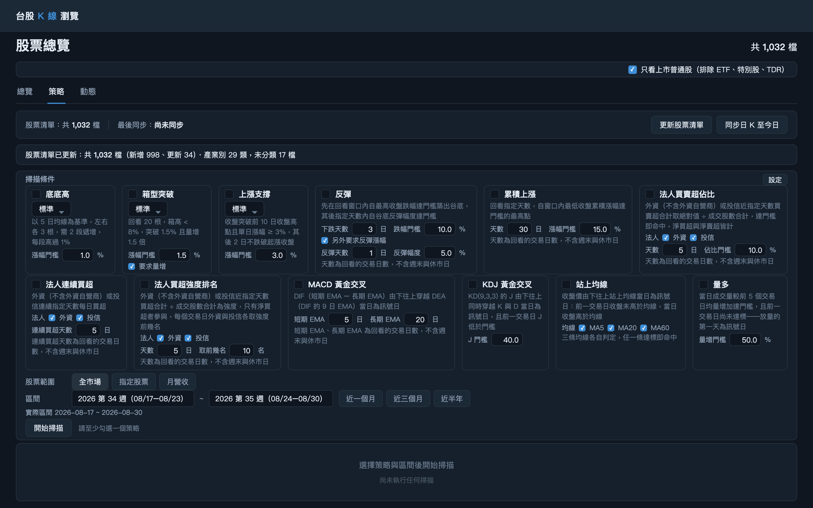
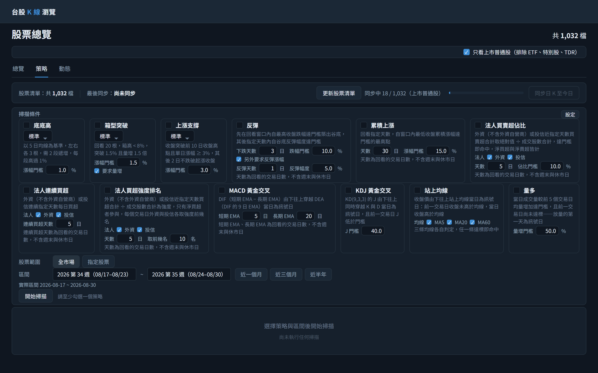
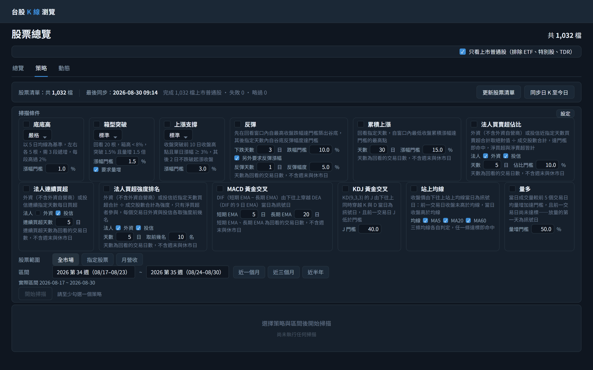
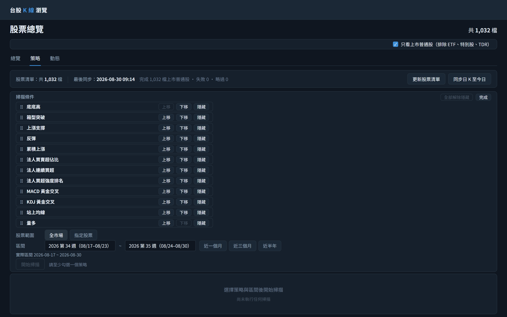
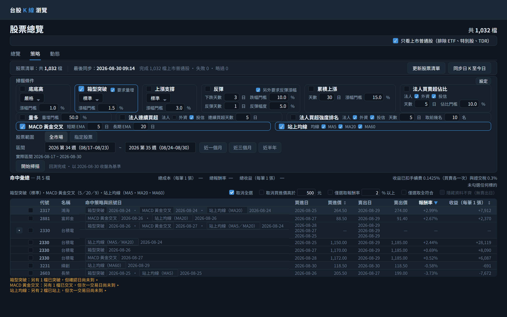
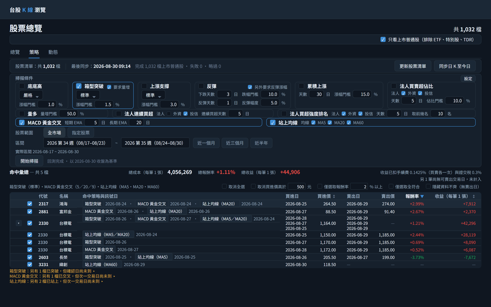
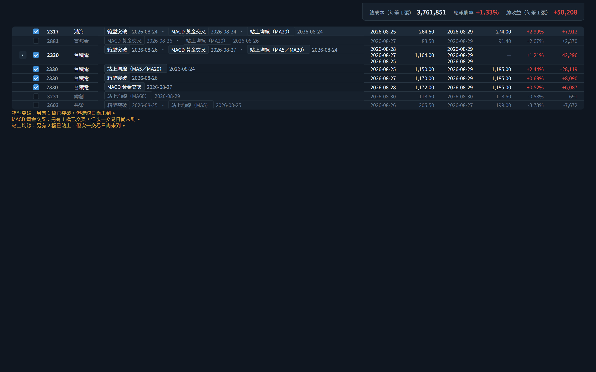

![初始畫面：股票清單只有開發種子的 34 檔，尚未同步。此時直接按同步只會補這 34 檔的行情，掃描範圍也就只有 34 檔——所以第一步是先按「更新股票清單」。策略卡片的形狀取自 API：底底高／箱型突破／上漲支撐有靈敏度下拉，其中箱型突破另依該條目的 paramGroups 多一個「要求量增」群組勾選框（預設勾選，與反彈的「另外要求反彈漲幅」是同一套機制，只是它不轄任何輸入），取消勾選即送出 requireVolume: false、本次掃描跳過量能條件；反彈、累積上漲、三張法人籌碼卡片與 MACD／KDJ 兩張技術指標卡片則依 params 畫出輸入格——法人籌碼卡片的「外資／投信」是複選參數，畫成勾選框、預設兩者都勾；KDJ 的「J 門檻」沒有單位，所以輸入格後面沒有後綴。站上均線卡片的「均線」同樣是複選參數，畫成 MA5／MA20／MA60 三個勾選框、預設全勾——與法人卡片的「外資／投信」走同一套 multiSelect 機制，前端依 `type` 畫勾選框而不認得參數名字。第十二張「量多」只有一格「量增門檻」百分比輸入（預設 50，可自行輸入）：當日成交量較前 5 個交易日均量增加達這個百分比、且前一交易日尚未達標——放量的第一天——才是訊號日；它同樣是依 params 畫出的數字輸入，沒有靈敏度下拉。本頁沒有「回測」按鈕——掃描成功後會自動回測。條件區標題列最右邊另有一顆「設定」按鈕，用來隱藏策略與調整卡片順序（見第 5～8 步）。](step-1.png)
1初始畫面：股票清單只有開發種子的 34 檔，尚未同步。此時直接按同步只會補這 34 檔的行情，掃描範圍也就只有 34 檔——所以第一步是先按「更新股票清單」。策略卡片的形狀取自 API：底底高／箱型突破／上漲支撐有靈敏度下拉，其中箱型突破另依該條目的 paramGroups 多一個「要求量增」群組勾選框（預設勾選，與反彈的「另外要求反彈漲幅」是同一套機制，只是它不轄任何輸入），取消勾選即送出 requireVolume: false、本次掃描跳過量能條件；反彈、累積上漲、三張法人籌碼卡片與 MACD／KDJ 兩張技術指標卡片則依 params 畫出輸入格——法人籌碼卡片的「外資／投信」是複選參數，畫成勾選框、預設兩者都勾；KDJ 的「J 門檻」沒有單位，所以輸入格後面沒有後綴。站上均線卡片的「均線」同樣是複選參數，畫成 MA5／MA20／MA60 三個勾選框、預設全勾——與法人卡片的「外資／投信」走同一套 multiSelect 機制，前端依 `type` 畫勾選框而不認得參數名字。第十二張「量多」只有一格「量增門檻」百分比輸入（預設 50，可自行輸入）：當日成交量較前 5 個交易日均量增加達這個百分比、且前一交易日尚未達標——放量的第一天——才是訊號日；它同樣是依 params 畫出的數字輸入，沒有靈敏度下拉。本頁沒有「回測」按鈕——掃描成功後會自動回測。條件區標題列最右邊另有一顆「設定」按鈕，用來隱藏策略與調整卡片順序（見第 5～8 步）。
GET
/api/strategies取策略清單：三個有靈敏度型態的三段說明文字，以及反彈／累積上漲／三個法人籌碼型態／MACD／KDJ 的 params（含 investors 複選參數、MACD 短期 EMA 的 lessThan 限制、KDJ 無單位且可為負的 jThreshold）與 paramGroups（反彈一筆 rise；箱型突破一筆 volume／「要求量增」／default 為 true，不轄任何 params）；目錄共十二筆，站上均線為第十一筆（presets 空陣列，params 恰一筆 maPeriods 複選：options MA5／MA20／MA60、default 三者全選、minSelected 1），量多為第十二筆（presets 空陣列，params 恰一筆數字參數 increasePercent：「量增門檻」、單位 %、default 50、min 0、max 1000、step 0.1）GET
/api/stocks/sync/progress?jobType=PRICE_BACKFILL取 lastSyncedAt 顯示最後同步時間GET
/api/stocks?page=1&size=1只取 total 顯示「共 34 檔」
2點擊「更新股票清單」：一次動作同時匯入全體上市普通股與交易所官方產業別，摘要顯示「共 1,032 檔（新增 998、更新 34）・產業別 29 類，未分類 17 檔」，常駐檔數同步更新。此步驟只寫股票主檔與產業別，完全不抓行情。
POST
/api/stocks/universe/import無 body；此端點即是向交易所抓取上市股票清單的起點，同時匯入官方產業別，回應的 totalActiveCount／insertedCount／updatedCount／industryCount／uncategorizedStockCount 組成摘要GET
/api/stocks?page=1&size=1匯入完成後重取 total 更新「共 N 檔」
3點擊「同步日 K 至今日」：母體是 1,032 檔上市普通股（沿用頁籤列上方「只看上市普通股」的預設勾選），同步轉為執行中並顯示 18 / 1,032 進度，畫面不被阻塞；此時仍可再按「更新股票清單」，兩顆按鈕互不阻擋。
POST
/api/stocks/sync/backfillbody startDate=2026-01-01, endDate=2026-08-30, catchUp=true, commonStocksOnly=true（取自頁面層級勾選框），不帶 stockIds 代表全市場；此端點即是抓取歷史日 K 的起點，全市場模式逐交易日各向交易所取一次當日全市場快照GET
/api/stocks/sync/progress?jobType=PRICE_BACKFILL每 5 秒輪詢更新進度
4同步完成，最後同步時間更新為 2026-08-30 09:14、完成 1,032 檔上市普通股（摘要說明母體，避免與常駐的「共 N 檔」對不起來）。十二張卡片都還沒勾選，「開始掃描」為 disabled 並提示「請至少勾選一個策略」。掃描之前先整理卡片：這一趟用不到 KDJ 黃金交叉，而「量多」排在最後一張、每次都要找——下一步按條件區標題列最右邊的「設定」。
GET
/api/stocks/sync/progress?jobType=PRICE_BACKFILL同步完成後重取 lastSyncedAt
5點擊「設定」：原本放卡片的位置換成設定清單，一列一個策略，列出 GET /api/strategies 回應的全部十二個、依目前的順序；每列由左至右是拖拉把手「⠿」、策略名稱、「上移」「下移」與「隱藏」。按鈕文字變成「完成」，其左多一顆「全部解除隱藏」——此時沒有任何策略被隱藏，所以它是 disabled；第一列的「上移」與最後一列的「下移」同樣 disabled。清單裡沒有靈敏度與參數輸入，那些只在卡片上。股票範圍、區間與「開始掃描」照常留在畫面上。進入設定模式不發任何請求。
6按「KDJ 黃金交叉」那一列的「隱藏」：該列名稱轉為弱化色並標「已隱藏」，按鈕變成「解除隱藏」，「全部解除隱藏」隨之可按。變更當下即生效並寫進瀏覽器的 localStorage（以策略 code 記），沒有「儲存」按鈕、也不發任何請求；重新整理後還在。被隱藏的策略仍留在清單裡、照樣可以排序——它記著自己的位置，解除隱藏後卡片就回到那裡。隱藏一個當下已勾選的策略時，它會同時變為未勾選。
7按住最後一列「量多」拖到「法人連續買超」那一列的上半部放開：「量多」插到它前面，成為第七列（拖拉途中有一條藍色橫線標出落點）。不用滑鼠也做得到——聚焦該列的「上移」連按五次，焦點會留在同一顆按鈕上。順序同樣即時寫入 localStorage，不發任何請求。這個順序除了決定卡片怎麼排，也決定掃描請求 strategies 的先後。
![按「完成」回到卡片：選項區只畫未隱藏的十一張，「KDJ 黃金交叉」不見了，「量多」排到第七張，其餘照原順序遞補。接著在這十一張中勾選三個策略：箱型突破、MACD 黃金交叉與站上均線，其餘八張維持未勾選、控制項 disabled，本次掃描的請求不帶那八筆，被隱藏的 KDJ 黃金交叉更不會被送出。只挑三個是有意的：之後的「僅選取全符合」要求一檔股票被每一個已選策略各命中過，勾得越多越不可能有一檔全中，那個框也就沒有東西可展示。箱型突破選標準靈敏度、漲幅門檻 1.5%，「要求量增」維持勾選（送出 requireVolume: true）；MACD 黃金交叉維持預設，短期 EMA 5 日、長期 EMA 20 日（短期必須小於長期，填反了卡片下方會立刻提示）；站上均線的「均線」是複選參數，畫成 MA5／MA20／MA60 三個勾選框、維持預設全勾，送出時帶 maPeriods: [MA5, MA20, MA60]、不帶 preset。此時尚未掃描。區間以週選擇：預設起始週為上週 2026 第 34 週（08/17–08/23）、結束週為本週 2026 第 35 週（08/24–08/30），這個預設不對應任何快捷鈕，所以三個快捷鈕都不呈選中；區間列下方的「實際區間 2026-08-17 ~ 2026-08-30」說明週換算成的起迄日——起日是起始週的週一，迄日因為結束週就是本週，所以是今日。](step-8.png)
8按「完成」回到卡片：選項區只畫未隱藏的十一張，「KDJ 黃金交叉」不見了，「量多」排到第七張，其餘照原順序遞補。接著在這十一張中勾選三個策略：箱型突破、MACD 黃金交叉與站上均線，其餘八張維持未勾選、控制項 disabled，本次掃描的請求不帶那八筆，被隱藏的 KDJ 黃金交叉更不會被送出。只挑三個是有意的：之後的「僅選取全符合」要求一檔股票被每一個已選策略各命中過，勾得越多越不可能有一檔全中，那個框也就沒有東西可展示。箱型突破選標準靈敏度、漲幅門檻 1.5%，「要求量增」維持勾選（送出 requireVolume: true）；MACD 黃金交叉維持預設，短期 EMA 5 日、長期 EMA 20 日（短期必須小於長期，填反了卡片下方會立刻提示）；站上均線的「均線」是複選參數，畫成 MA5／MA20／MA60 三個勾選框、維持預設全勾，送出時帶 maPeriods: [MA5, MA20, MA60]、不帶 preset。此時尚未掃描。區間以週選擇：預設起始週為上週 2026 第 34 週（08/17–08/23）、結束週為本週 2026 第 35 週（08/24–08/30），這個預設不對應任何快捷鈕，所以三個快捷鈕都不呈選中；區間列下方的「實際區間 2026-08-17 ~ 2026-08-30」說明週換算成的起迄日——起日是起始週的週一，迄日因為結束週就是本週，所以是今日。
![點擊「開始掃描」：結果區只有一張表「命中彙總 — 共 5 檔」，不再依策略拆成多個區塊；一檔命中幾個策略，就在同一列逐一列出各策略與各自的訊號日。此時表格還沒有勾選框——勾選框只用來決定哪些列計入回測總計，回測前沒有總計可以影響，擺出來只會讓人勾了卻看不到任何變化。標題下那一行是本次三個策略實際採用的參數，取自回應而非畫面上的輸入值：箱型突破（標準）・MACD 黃金交叉（5／20／9）・站上均線（MA5・MA20・MA60），站上均線的三條均線取自回應的 maPeriods；箱型突破的「要求量增」維持勾選，所以不寫「不看量增」。各策略的判定明細欄位不在本頁呈現。預設排序的第一層是命中策略數由多到少，其次才是各策略中最新的訊號日由新到舊、同日依代號升冪：台積電與鴻海都命中 3 個策略（箱型突破、MACD 黃金交叉、站上均線）排最前，兩者同為 3 種時台積電的最新訊號日 08-27 較新所以在前；鴻海的最新訊號日只有 08-24，仍排在命中 2 種、訊號日 08-26 的富邦金之前；命中 2 種的富邦金與長榮其次；只命中 1 種的緯創，訊號日 08-29 是全表最新，卻排在最後。數的是相異策略數、不是筆數。站上均線的命中標出達標的均線：台積電 08-24（MA5／MA20，兩條同時達標仍只是一筆）、富邦金 08-26（MA20）、長榮 08-25（MA5）、鴻海 08-24（MA20）、緯創 08-29（MA60）。買進日不在這張表——它要等回測回應才會出現；掃描回應各筆回報的買進日一律是訊號日的下一個交易日，所以台積電三個策略落在三個不同的買進日 08-25、08-27、08-28，鴻海三個策略訊號日同為 08-24、買進日同為 08-25，緯創 08-29 的買進日 08-30 是它最新一根日線。訊號落在最新一根日線 08-30 上的標的沒有買進日可報：站上均線 2 檔、MACD 黃金交叉 1 檔，連同箱型突破 1 檔已突破但確認日尚未到，都列在表格下方的待確認行、行首標明策略名稱，不進表、不計入「共 5 檔」、也不送回測。命中 5 檔：掃描一完成，前端就自動送出回測，不需要再按任何按鈕——命中彙總表先照常出現，「開始掃描」右側顯示「回測中…」，全市場回測算完之前不必陪著等。](step-9.png)
9點擊「開始掃描」：結果區只有一張表「命中彙總 — 共 5 檔」，不再依策略拆成多個區塊；一檔命中幾個策略，就在同一列逐一列出各策略與各自的訊號日。此時表格還沒有勾選框——勾選框只用來決定哪些列計入回測總計，回測前沒有總計可以影響，擺出來只會讓人勾了卻看不到任何變化。標題下那一行是本次三個策略實際採用的參數，取自回應而非畫面上的輸入值：箱型突破（標準）・MACD 黃金交叉（5／20／9）・站上均線（MA5・MA20・MA60），站上均線的三條均線取自回應的 maPeriods；箱型突破的「要求量增」維持勾選，所以不寫「不看量增」。各策略的判定明細欄位不在本頁呈現。預設排序的第一層是命中策略數由多到少，其次才是各策略中最新的訊號日由新到舊、同日依代號升冪：台積電與鴻海都命中 3 個策略（箱型突破、MACD 黃金交叉、站上均線）排最前，兩者同為 3 種時台積電的最新訊號日 08-27 較新所以在前；鴻海的最新訊號日只有 08-24，仍排在命中 2 種、訊號日 08-26 的富邦金之前；命中 2 種的富邦金與長榮其次；只命中 1 種的緯創，訊號日 08-29 是全表最新，卻排在最後。數的是相異策略數、不是筆數。站上均線的命中標出達標的均線：台積電 08-24（MA5／MA20，兩條同時達標仍只是一筆）、富邦金 08-26（MA20）、長榮 08-25（MA5）、鴻海 08-24（MA20）、緯創 08-29（MA60）。買進日不在這張表——它要等回測回應才會出現；掃描回應各筆回報的買進日一律是訊號日的下一個交易日，所以台積電三個策略落在三個不同的買進日 08-25、08-27、08-28，鴻海三個策略訊號日同為 08-24、買進日同為 08-25，緯創 08-29 的買進日 08-30 是它最新一根日線。訊號落在最新一根日線 08-30 上的標的沒有買進日可報：站上均線 2 檔、MACD 黃金交叉 1 檔，連同箱型突破 1 檔已突破但確認日尚未到，都列在表格下方的待確認行、行首標明策略名稱，不進表、不計入「共 5 檔」、也不送回測。命中 5 檔：掃描一完成，前端就自動送出回測，不需要再按任何按鈕——命中彙總表先照常出現，「開始掃描」右側顯示「回測中…」，全市場回測算完之前不必陪著等。
POST
/api/strategies/scanbody strategies 只含未隱藏且已勾選的策略、依卡片顯示順序排列=[箱型突破/STANDARD/risePercent=1.5/requireVolume=true, MACD 黃金交叉/fastPeriod=5/slowPeriod=20, 站上均線/maPeriods=[MA5,MA20,MA60]]（MACD 與站上均線不帶 preset 與 risePercent；站上均線不帶 preset），commonStocksOnly=true, startDate=2026-08-17（起始週 2026 第 34 週的週一）, endDate=2026-08-30（結束週為本週，送今日），不帶 stockIds 代表全市場；回應每筆命中另帶 buyDate（確認完成日之後的下一個交易日：三個型態皆為訊號日的下一個交易日），站上均線那幾筆另帶 detail.matchedPeriods（台積電 MA5／MA20、富邦金 MA20、長榮 MA5、鴻海 MA20、緯創 MA60），並在 results 回 maPeriods=[MA5,MA20,MA60]；訊號落在最新一根日線的標的（站上均線 2 檔、MACD 1 檔）回在各自的 pendingConfirm，不出現在 items、不計入 matchedCount。本端點只讀已入庫的日線，不向交易所抓取POST
/api/strategies/backtest掃描成功且命中 ≥ 1 檔時自動送出，不需按鈕；body items=[{2330, 2026-08-25}, {2330, 2026-08-27}, {2330, 2026-08-28}, {2317, 2026-08-25}, {2881, 2026-08-27}, {2603, 2026-08-26}, {3231, 2026-08-30}]，日期為各筆的 buyDate；以 (stockId, buyDate) 去重——台積電三個策略落在三個相異買進日送三筆，鴻海三個策略的買進日同為 08-25 只送一筆；回應的 buyDate／buyPrice／sellDate／sellPrice／returnPercent／profit 依 (stockId, buyDate) 對回各列填入六欄，緯創買進日為最新一根日線，無賣出日![自動回測完成（不發新請求，第 9 步送出的回測回應抵達）：表格最左出現每列一個勾選框，右側補上買進日／買進價／賣出日／賣出價／報酬率／收益六欄，標題右側補上總成本、總報酬率與總收益三個標籤，標題列下方靠右出現五個等高的批次勾選框——全部同時出現。初始勾選狀態不是「全部勾選」，而是五步依序跑出來的結果：① 每一筆先勾選；② 「隱藏資料不齊（無賣出日）」只藏沒有賣出日的筆，而這份回應裡每一筆都有賣出日，它沒有東西可作用，維持未勾選且 disabled——緯創的買進日 08-30 就是它最新的一個交易日，其後還沒有可賣出的日子，回測因此以買進日的開盤價賣出（買進日＝賣出日 08-30、買進價＝賣出價 118.50，報酬率 -0.58%、收益 -691 全是手續費與證交稅），它是一筆有賣出日的普通筆，不再被藏起來；③ 「取消買進價高於 [500] 元」預設勾選，把買進價高於 500 的三筆——台積電 08-25（1,150.00）、08-27（1,170.00）、08-28（1,172.00）——取消勾選並隱藏，台積電三筆都被藏走，整檔因此不出現在表上；④ 「僅選取報酬率 [2] % 以上」預設勾選，作用範圍只有此時仍顯示中的筆（鴻海 +2.99%、富邦金 +2.67%、緯創 -0.58%、長榮 -3.73%），把緯創與長榮取消勾選（不隱藏，仍留在表上整列反灰），並把排序切成報酬率降冪；⑤ 新增的「僅選取全符合」預設勾選，作用範圍同樣只有此時仍顯示中的筆：全符合以股票為單位，指被本次三個策略每一個都命中過的股票——鴻海是（箱型突破、MACD 黃金交叉、站上均線三者都在掃描回應的 items 裡），所以維持勾選；富邦金只命中 MACD 與站上均線、沒有箱型突破，不是全符合，它那一筆因此被取消勾選。富邦金的報酬率 +2.67% 明明過了 2% 的門檻，是這個框把它排除的——不隱藏，整列反灰，仍留在表上，讀者才看得出「差一個策略就全中」的是哪一檔；緯創與長榮已在第 ④ 步取消，本步不改。台積電也是全符合，但此時被價格框藏著，不受本步影響。順序是契約的一部分：先藏後選，被隱藏框藏起來的筆就不受第 ④、⑤ 步影響，使用者取消任一隱藏框時拿回的才是原本的勾選狀態。表上因此剩鴻海（勾著）、富邦金、緯創與長榮（未勾選、反灰），三個總計只含鴻海那一筆：總成本 264,876、總報酬率 +2.99%、總收益 +7,912（7,912 ÷ 264,876 = +2.99%）。價格、報酬率、全符合三個框都勾著，兩格數字輸入因此一開始即 disabled，要換門檻得先取消勾選；全符合框沒有數字輸入；「取消全選」依推導呈未勾選——只要還有任一筆勾著，它就不打勾。報酬率表頭顯示「▼」：這個降冪是第 ④ 步一併做的排序，不是回測自己的行為，取消報酬率框也不會還原它；全符合框不改排序。總計下方兩行分開陳述兩件不同的事——「另 6 筆未勾選，未計入」（台積電三筆、富邦金、緯創、長榮，被門檻或全符合排除）、「另 3 筆已隱藏」（台積電三筆，表上看不到）；沒有任何一筆缺賣出日，所以沒有「尚無可賣出交易日」那一行；全符合框只取消勾選、不隱藏，所以不會因它多出已隱藏的筆數。「共 5 檔」是命中檔數，不因隱藏或取消勾選而改變。收益與報酬率都已扣除買賣手續費與證交稅，總計下方一行「收益已扣手續費 0.1425%（買賣各一次）與證交稅 0.3%」說明扣了什麼；總成本不是漲跌值，不套紅綠色。命中彙總表的列不導向日 K 頁；回測完成後點選一列本身就等同點它的勾選框，游標也因此為手指。](step-10.png)
10自動回測完成（不發新請求，第 9 步送出的回測回應抵達）：表格最左出現每列一個勾選框，右側補上買進日／買進價／賣出日／賣出價／報酬率／收益六欄，標題右側補上總成本、總報酬率與總收益三個標籤，標題列下方靠右出現五個等高的批次勾選框——全部同時出現。初始勾選狀態不是「全部勾選」，而是五步依序跑出來的結果：① 每一筆先勾選；② 「隱藏資料不齊（無賣出日）」只藏沒有賣出日的筆，而這份回應裡每一筆都有賣出日，它沒有東西可作用，維持未勾選且 disabled——緯創的買進日 08-30 就是它最新的一個交易日，其後還沒有可賣出的日子，回測因此以買進日的開盤價賣出（買進日＝賣出日 08-30、買進價＝賣出價 118.50，報酬率 -0.58%、收益 -691 全是手續費與證交稅），它是一筆有賣出日的普通筆，不再被藏起來；③ 「取消買進價高於 [500] 元」預設勾選，把買進價高於 500 的三筆——台積電 08-25（1,150.00）、08-27（1,170.00）、08-28（1,172.00）——取消勾選並隱藏，台積電三筆都被藏走，整檔因此不出現在表上；④ 「僅選取報酬率 [2] % 以上」預設勾選，作用範圍只有此時仍顯示中的筆（鴻海 +2.99%、富邦金 +2.67%、緯創 -0.58%、長榮 -3.73%），把緯創與長榮取消勾選（不隱藏，仍留在表上整列反灰），並把排序切成報酬率降冪；⑤ 新增的「僅選取全符合」預設勾選，作用範圍同樣只有此時仍顯示中的筆：全符合以股票為單位，指被本次三個策略每一個都命中過的股票——鴻海是（箱型突破、MACD 黃金交叉、站上均線三者都在掃描回應的 items 裡），所以維持勾選；富邦金只命中 MACD 與站上均線、沒有箱型突破，不是全符合，它那一筆因此被取消勾選。富邦金的報酬率 +2.67% 明明過了 2% 的門檻，是這個框把它排除的——不隱藏，整列反灰，仍留在表上，讀者才看得出「差一個策略就全中」的是哪一檔；緯創與長榮已在第 ④ 步取消，本步不改。台積電也是全符合，但此時被價格框藏著，不受本步影響。順序是契約的一部分：先藏後選，被隱藏框藏起來的筆就不受第 ④、⑤ 步影響，使用者取消任一隱藏框時拿回的才是原本的勾選狀態。表上因此剩鴻海（勾著）、富邦金、緯創與長榮（未勾選、反灰），三個總計只含鴻海那一筆：總成本 264,876、總報酬率 +2.99%、總收益 +7,912（7,912 ÷ 264,876 = +2.99%）。價格、報酬率、全符合三個框都勾著，兩格數字輸入因此一開始即 disabled，要換門檻得先取消勾選；全符合框沒有數字輸入；「取消全選」依推導呈未勾選——只要還有任一筆勾著，它就不打勾。報酬率表頭顯示「▼」：這個降冪是第 ④ 步一併做的排序，不是回測自己的行為，取消報酬率框也不會還原它；全符合框不改排序。總計下方兩行分開陳述兩件不同的事——「另 6 筆未勾選，未計入」（台積電三筆、富邦金、緯創、長榮，被門檻或全符合排除）、「另 3 筆已隱藏」（台積電三筆，表上看不到）；沒有任何一筆缺賣出日，所以沒有「尚無可賣出交易日」那一行；全符合框只取消勾選、不隱藏，所以不會因它多出已隱藏的筆數。「共 5 檔」是命中檔數，不因隱藏或取消勾選而改變。收益與報酬率都已扣除買賣手續費與證交稅，總計下方一行「收益已扣手續費 0.1425%（買賣各一次）與證交稅 0.3%」說明扣了什麼；總成本不是漲跌值，不套紅綠色。命中彙總表的列不導向日 K 頁；回測完成後點選一列本身就等同點它的勾選框，游標也因此為手指。
![取消勾選「取消買進價高於 [500] 元」：被它藏起來的三筆一次勾回並重新顯示——台積電 08-25、08-27、08-28。它們回來時是勾選的，即使 08-27 與 08-28 兩筆的報酬率 +0.69% / +0.52% 低於 2%：「僅選取報酬率 2% 以上」仍然勾著，但它只在被勾選的那一刻作用於當時顯示中的筆，不會回頭追之後才出現的列——各框各自記著自己藏了／取消了哪些筆，互不覆蓋。台積電同時是全符合，「僅選取全符合」仍勾著也不會把它們取消；富邦金（非全符合）、緯創與長榮（報酬率未達門檻）維持第 10 步的未勾選，因為取消的是價格框，只放回價格框自己動過的筆。金額輸入框隨之恢復可編輯（要換門檻就是先取消勾選、改金額、再勾選）；報酬率框與全符合框仍勾著，隱藏框照舊 disabled。排序維持報酬率降冪、不觸發重排，重新顯示的列直接落在它在目前排序中該在的位置：鴻海 +2.99%、富邦金 +2.67%（反灰）、台積電（父列合計 +1.21%）、緯創 -0.58%（反灰）、長榮 -3.73%（反灰）。三個總計重算為總成本 3,761,851、+1.33% / +50,208（鴻海 7,912 ＋ 台積電 28,119 ＋ 8,090 ＋ 6,087 = 50,208，除以這四筆的成本合計 3,761,851）；富邦金、緯創與長榮仍未勾選所以是「另 3 筆未勾選，未計入」；此時沒有任何一筆被隱藏，「已隱藏」那一行隨之消失。台積電有三個買進日：站上均線（MA5／MA20）訊號日 08-24、箱型突破 08-26、MACD 黃金交叉 08-27，買進日各是訊號日的下一個交易日——08-25、08-27、08-28——三個策略的訊號日不同、買進日也各不相同，所以是三筆。三筆各是一次獨立的買進賣出，該列因此帶展開鈕；摺疊時父列的買進日與賣出日逐行列出三筆各自的日期（由新到舊：08-28→08-29、08-27→08-29、08-25→08-29，同一行屬於同一筆），買進價為成本加權均價 1,164.00、報酬率 +1.21% 與收益 +42,296 為三筆合計；日期不能合計，所以逐筆列出，價格可以，所以取合計。賣出價沒有單一值，顯示「—」並與同欄靠右對齊。整個切換完全在前端完成，不重新呼叫任何端點。](step-11.png)
11取消勾選「取消買進價高於 [500] 元」：被它藏起來的三筆一次勾回並重新顯示——台積電 08-25、08-27、08-28。它們回來時是勾選的，即使 08-27 與 08-28 兩筆的報酬率 +0.69% / +0.52% 低於 2%：「僅選取報酬率 2% 以上」仍然勾著，但它只在被勾選的那一刻作用於當時顯示中的筆，不會回頭追之後才出現的列——各框各自記著自己藏了／取消了哪些筆，互不覆蓋。台積電同時是全符合，「僅選取全符合」仍勾著也不會把它們取消；富邦金（非全符合）、緯創與長榮（報酬率未達門檻）維持第 10 步的未勾選，因為取消的是價格框，只放回價格框自己動過的筆。金額輸入框隨之恢復可編輯（要換門檻就是先取消勾選、改金額、再勾選）；報酬率框與全符合框仍勾著，隱藏框照舊 disabled。排序維持報酬率降冪、不觸發重排，重新顯示的列直接落在它在目前排序中該在的位置：鴻海 +2.99%、富邦金 +2.67%（反灰）、台積電（父列合計 +1.21%）、緯創 -0.58%（反灰）、長榮 -3.73%（反灰）。三個總計重算為總成本 3,761,851、+1.33% / +50,208（鴻海 7,912 ＋ 台積電 28,119 ＋ 8,090 ＋ 6,087 = 50,208，除以這四筆的成本合計 3,761,851）；富邦金、緯創與長榮仍未勾選所以是「另 3 筆未勾選，未計入」；此時沒有任何一筆被隱藏，「已隱藏」那一行隨之消失。台積電有三個買進日：站上均線（MA5／MA20）訊號日 08-24、箱型突破 08-26、MACD 黃金交叉 08-27，買進日各是訊號日的下一個交易日——08-25、08-27、08-28——三個策略的訊號日不同、買進日也各不相同，所以是三筆。三筆各是一次獨立的買進賣出，該列因此帶展開鈕；摺疊時父列的買進日與賣出日逐行列出三筆各自的日期（由新到舊：08-28→08-29、08-27→08-29、08-25→08-29，同一行屬於同一筆），買進價為成本加權均價 1,164.00、報酬率 +1.21% 與收益 +42,296 為三筆合計；日期不能合計，所以逐筆列出，價格可以，所以取合計。賣出價沒有單一值，顯示「—」並與同欄靠右對齊。整個切換完全在前端完成，不重新呼叫任何端點。
![點擊台積電那一列的展開鈕：三個買進日各展開成一個子列，並依目前的報酬率降冪排在父列內（依序 08-25、08-27、08-28；父列逐行列出的日期仍依買進日由新到舊，那是日期清單、不隨排序改變），各有自己的買進日／買進價／賣出日／賣出價與自己的勾選框，每個子列只列落在該買進日的策略與其訊號日——08-25 那筆是站上均線（MA5／MA20，訊號日 08-24），買在 1,150.00、報酬率 +2.44%、收益 +28,119；08-27 那筆是箱型突破（訊號日 08-26），買在 1,170.00、報酬率 +0.69%、收益 +8,090；08-28 那筆是 MACD 黃金交叉（訊號日 08-27），買在 1,172.00、報酬率 +0.52%、收益 +6,087；三筆的賣出日同為 08-29、賣出價同為 1,185.00，報酬率不同純粹是買進成本不同。父列的 +1.21% 與 +42,296 是這三筆的成本加權合計（42,296 ÷ 3,496,975），與標題總計用的是同一套算法——差別只在涵蓋範圍是一檔還是全部。展開純屬前端，不重打端點；三個總計與各說明行都不變（3,761,851 / +1.33% / +50,208），標題的「共 5 檔」也不受影響——一檔有三個買進日仍然只算一檔。](step-12.png)
12點擊台積電那一列的展開鈕：三個買進日各展開成一個子列，並依目前的報酬率降冪排在父列內（依序 08-25、08-27、08-28；父列逐行列出的日期仍依買進日由新到舊，那是日期清單、不隨排序改變），各有自己的買進日／買進價／賣出日／賣出價與自己的勾選框，每個子列只列落在該買進日的策略與其訊號日——08-25 那筆是站上均線（MA5／MA20，訊號日 08-24），買在 1,150.00、報酬率 +2.44%、收益 +28,119；08-27 那筆是箱型突破（訊號日 08-26），買在 1,170.00、報酬率 +0.69%、收益 +8,090；08-28 那筆是 MACD 黃金交叉（訊號日 08-27），買在 1,172.00、報酬率 +0.52%、收益 +6,087；三筆的賣出日同為 08-29、賣出價同為 1,185.00，報酬率不同純粹是買進成本不同。父列的 +1.21% 與 +42,296 是這三筆的成本加權合計（42,296 ÷ 3,496,975），與標題總計用的是同一套算法——差別只在涵蓋範圍是一檔還是全部。展開純屬前端，不重打端點；三個總計與各說明行都不變（3,761,851 / +1.33% / +50,208），標題的「共 5 檔」也不受影響——一檔有三個買進日仍然只算一檔。
![點選台積電 08-27 那一列子列（等同點它的勾選框）：該子列整列反灰但自己的數字照常顯示（+0.69% / +8,090 仍看得到），父列的勾選框轉為半選（與已勾選在視覺上可分辨），父列合計即時重算為只含 08-25 與 08-28 那兩筆——買進價 1,161.00、+1.47% / +34,206。標題三個總計同步重算為總成本 2,590,184、+1.63% / +42,118（少掉的 1,171,667 正是 08-27 那筆的成本：1,170,000 加買進手續費 1,667），「另 M 筆未勾選，未計入」隨之從 3 筆變成 4 筆（富邦金、緯創、長榮與這一筆）；這一行數的是筆數而非檔數。父列逐行日期中 08-27 那一行隨之轉為弱化色，但仍列出，因為它描述的是這檔有過哪幾次進場。列的位置不動：排序只在點表頭（或勾選報酬率框）的那一刻依當時的值決定，之後逐列排除時列不會從手下跳走——父列從 +1.21% 變成 +1.47%，仍排在富邦金 +2.67% 之後，即使它超過了也不會重排，要依新值重排就再點一次表頭。此時仍有筆勾著，「取消全選」維持未勾選——它回答的是「是不是全部都取消了」這個是非題，部分勾選不呈半選；手動取消一筆也不會讓報酬率框、價格框或全符合框變成勾選或取消勾選，那三個是記住的開關。整個切換完全在前端完成，不重新呼叫回測端點。](step-13.png)
13點選台積電 08-27 那一列子列（等同點它的勾選框）：該子列整列反灰但自己的數字照常顯示（+0.69% / +8,090 仍看得到），父列的勾選框轉為半選（與已勾選在視覺上可分辨），父列合計即時重算為只含 08-25 與 08-28 那兩筆——買進價 1,161.00、+1.47% / +34,206。標題三個總計同步重算為總成本 2,590,184、+1.63% / +42,118（少掉的 1,171,667 正是 08-27 那筆的成本：1,170,000 加買進手續費 1,667），「另 M 筆未勾選，未計入」隨之從 3 筆變成 4 筆（富邦金、緯創、長榮與這一筆）；這一行數的是筆數而非檔數。父列逐行日期中 08-27 那一行隨之轉為弱化色，但仍列出，因為它描述的是這檔有過哪幾次進場。列的位置不動：排序只在點表頭（或勾選報酬率框）的那一刻依當時的值決定，之後逐列排除時列不會從手下跳走——父列從 +1.21% 變成 +1.47%，仍排在富邦金 +2.67% 之後，即使它超過了也不會重排，要依新值重排就再點一次表頭。此時仍有筆勾著，「取消全選」維持未勾選——它回答的是「是不是全部都取消了」這個是非題，部分勾選不呈半選；手動取消一筆也不會讓報酬率框、價格框或全符合框變成勾選或取消勾選，那三個是記住的開關。整個切換完全在前端完成，不重新呼叫回測端點。

14勾選標題列下方的「取消全選」：表上每一筆的勾選框一次全部取消——單訊號列、台積電三個子列都取消，父列轉為未勾選、合計顯示「—」、逐行日期全部轉為弱化色，整張表反灰但各列自己的數字照常顯示。三個總計（含總成本）顯示弱化的「—」而不是 0%／0，下方說明為「未勾選任何標的」（勾回任何一筆就會有數字，與「沒有可回測的標的」是兩回事）。排序照舊停在「報酬率 ▼」、列的位置不變。「取消全選」同時會把所有被隱藏的筆重新顯示——此時表上沒有被隱藏的筆（價格框已在第 11 步取消），所以沒有列多出來。它一被點（不論勾選或取消勾選），另外的批次框一律變為未勾選——「取消買進價高於 500 元」、「僅選取報酬率 2% 以上」與「僅選取全符合」同時鬆開（「隱藏資料不齊（無賣出日）」本來就因為沒有無賣出日的筆而 disabled、未勾選），兩格數字輸入因此恢復可編輯。它的勾選狀態是從各筆推導的：逐列手動取消到一筆不剩時它會自己變成勾選，勾回任何一筆它又自己變回未勾選。整個切換完全在前端完成，不重新呼叫回測端點。

15取消勾選「取消全選」：表上每一筆一次全部勾回，父列回到已勾選，三個總計回到全勾時的值——總成本 4,174,937、總報酬率 +1.06%、總收益 +44,215（鴻海 7,912 ＋ 台積電 28,119 ＋ 8,090 ＋ 6,087 ＋ 富邦金 2,370 － 緯創 691 － 長榮 7,672 = 44,215），這三個數字必須分別等於回測回應的 totalCost／totalReturnPercent／totalProfit。此時沒有任何被隱藏的筆，五個批次框全部未勾選、兩格數字輸入可編輯。緯創那一筆以買進日的開盤價賣出（08-30 買、08-30 賣，皆 118.50），收益 -691、報酬率 -0.58% 全是費稅；它有賣出日，所以照常計入總計，總計下方也就沒有「尚無可賣出交易日」「未勾選」「已隱藏」任何一行。排序仍停在報酬率降冪，取消勾選報酬率框並不還原排序。整個切換完全在前端完成，不重新呼叫回測端點。

16勾選「僅選取全符合」：只動非全符合的筆，而且是取消勾選、不隱藏——富邦金（只命中 MACD 與站上均線）、長榮（只命中箱型突破與站上均線）與緯創（只命中站上均線）三檔各自那一筆整列反灰，仍留在表上；全符合的鴻海與台積電（三個子列）維持勾選。判定依據是掃描回應的 items，不是畫面上卡片的勾選狀態，也不是買進日：台積電三個策略落在三個不同買進日、各佔一列，三列仍都勾著。三個總計重算為只含全符合那些筆：總成本 3,761,851、+1.33% / +50,208（鴻海 7,912 ＋ 台積電 28,119 ＋ 8,090 ＋ 6,087）。下方一行：「另 3 筆未勾選，未計入」（富邦金、緯創、長榮），沒有「已隱藏」那一行——這個框不隱藏任何一筆。排序不動，報酬率表頭維持「▼」，列的位置不變；父列因這個框永遠是全勾或全不勾、不會半選；「取消全選」維持未勾選。再取消勾選這個框，它取消掉的那些筆全部勾回。整個切換完全在前端完成，不重新呼叫掃描或回測端點。

17往下捲動：標題列、五個批次勾選框與「未計入」說明隨頁面捲走，只有三個總計（總成本 3,761,851、總報酬率 +1.33%、總收益 +50,208）浮在畫面頂端、對齊結果區右緣跟隨。浮動的數字與原位那份是同一份，捲動中勾選任何一列都即時更新；捲回原位時浮動那份消失，畫面上永遠只看得到一份，整張命中表捲過之後也一併消失。捲動純屬呈現，不發請求。